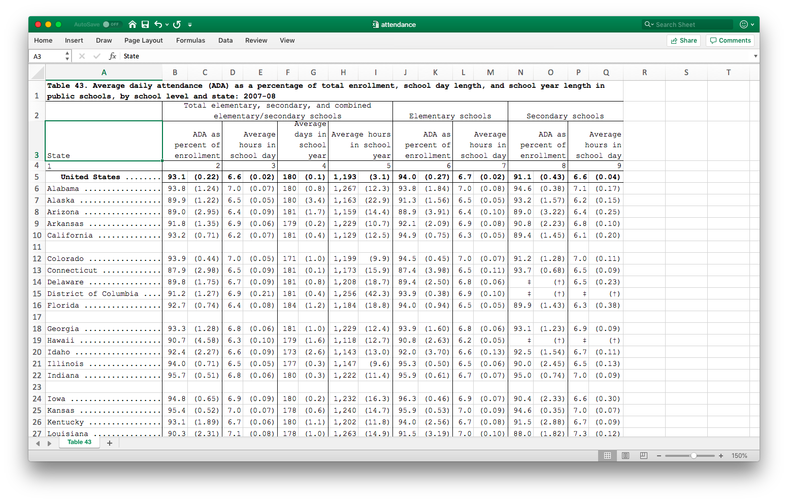

4.6 Cleaning from Excel files
Excel, being omnipresent, creates its own sets of difficulties. Excel, on top of being a data entry and analysis platform, is also a visual platform, so tables are often created to look good rather than be tidy. Things we commonly find in Excel files include colored rows and columns, multiple lines of headers, multiple rows with variables, typos resulting in numeric data becoming string data, and many others.
Let’s start with a data set that’s structured similarly to many government datasets around the world.

Notice that there are two levels of headers on top, each spanning multiple columns. Data is in paired columns, with the first column being the statistic and the second column being its standard error. The first row is a title, which we don’t need, and the 4th row is also not needed.
We’ll first tidy-fy this dataset, and then we’ll clean it up a bit. Let’s first think about the structure we want to get to for tidy-fication. The actual data lies in the statistics and the standard errors, and each of the column groupings represents different variables, so they should be in columns.
You can try to load this data using import, but you’ll find it’s a big mess.
There are two powerful packages (by the same group of developers), tidyxl and
unpivotr, that are fantastic tools for “fixing” Excel files for analysis.
Let’s start with tidyxl.
library(tidyxl)
dataset1 <- xlsx_cells('data/attendance.xlsx')
dataset1## # A tibble: 1,173 x 21
## sheet address row col is_blank data_type error logical numeric
## <chr> <chr> <int> <int> <lgl> <chr> <chr> <lgl> <dbl>
## 1 Tabl… A1 1 1 FALSE character <NA> NA NA
## 2 Tabl… B1 1 2 TRUE blank <NA> NA NA
## 3 Tabl… C1 1 3 TRUE blank <NA> NA NA
## 4 Tabl… D1 1 4 TRUE blank <NA> NA NA
## 5 Tabl… E1 1 5 TRUE blank <NA> NA NA
## 6 Tabl… F1 1 6 TRUE blank <NA> NA NA
## 7 Tabl… G1 1 7 TRUE blank <NA> NA NA
## 8 Tabl… H1 1 8 TRUE blank <NA> NA NA
## 9 Tabl… I1 1 9 TRUE blank <NA> NA NA
## 10 Tabl… J1 1 10 TRUE blank <NA> NA NA
## # … with 1,163 more rows, and 12 more variables: date <dttm>,
## # character <chr>, character_formatted <list>, formula <chr>,
## # is_array <lgl>, formula_ref <chr>, formula_group <int>, comment <chr>,
## # height <dbl>, width <dbl>, style_format <chr>, local_format_id <int>Notice that this pulls in a lot of meta-data in a tidy form, including information about cell formatting. This will be really useful in many situations.
First, lets get rid of the rows we don’t need.
dataset1 <- dataset1 %>% filter(row != 1, row != 4, row < 65)Now we could manipulate this dataset using tidyverse tools, but unpivotr is much mor poweful.
First, we are going to pull off the two headers. unpivotr does this using the function behead (suggestive?),
with the first argument being the direction (‘N’, “S”, ‘E’,‘W’,etc) of the table that the header is present. We will
also consider the first column, consisting of state names, as a header on the left.
library(unpivotr)
dataset1 %>%
behead('N', tophead) %>%
behead('N', head2) %>%
behead('W', State) %>%
select(row, col, data_type, numeric, tophead, head2, State)## # A tibble: 960 x 7
## row col data_type numeric tophead head2 State
## <int> <int> <chr> <dbl> <chr> <chr> <chr>
## 1 5 2 numeric 9.31e+1 Total elementary, se… ADA as p… " Unit…
## 2 5 3 numeric 2.19e-1 <NA> <NA> " Unit…
## 3 5 4 numeric 6.64e+0 <NA> Average … " Unit…
## 4 5 5 numeric 1.76e-2 <NA> <NA> " Unit…
## 5 5 6 numeric 1.80e+2 <NA> Average … " Unit…
## 6 5 7 numeric 1.43e-1 <NA> <NA> " Unit…
## 7 5 8 numeric 1.19e+3 <NA> Average … " Unit…
## 8 5 9 numeric 3.09e+0 <NA> <NA> " Unit…
## 9 5 10 numeric 9.40e+1 Elementary schools ADA as p… " Unit…
## 10 5 11 numeric 2.69e-1 <NA> <NA> " Unit…
## # … with 950 more rowsWe need to separate the statistics and the standard errors from consecutive columns, and also make them headers.
dataset1 %>%
behead('N', tophead) %>%
behead('N', head2) %>%
behead('W', State) %>%
select(row, col, data_type, numeric, tophead, head2, State) %>%
mutate(header = ifelse(col %% 2 == 0, 'stats','se'))## # A tibble: 960 x 8
## row col data_type numeric tophead head2 State header
## <int> <int> <chr> <dbl> <chr> <chr> <chr> <chr>
## 1 5 2 numeric 9.31e+1 Total elementar… ADA as … " Uni… stats
## 2 5 3 numeric 2.19e-1 <NA> <NA> " Uni… se
## 3 5 4 numeric 6.64e+0 <NA> Average… " Uni… stats
## 4 5 5 numeric 1.76e-2 <NA> <NA> " Uni… se
## 5 5 6 numeric 1.80e+2 <NA> Average… " Uni… stats
## 6 5 7 numeric 1.43e-1 <NA> <NA> " Uni… se
## 7 5 8 numeric 1.19e+3 <NA> Average… " Uni… stats
## 8 5 9 numeric 3.09e+0 <NA> <NA> " Uni… se
## 9 5 10 numeric 9.40e+1 Elementary scho… ADA as … " Uni… stats
## 10 5 11 numeric 2.69e-1 <NA> <NA> " Uni… se
## # … with 950 more rowsThe %% operator computes the remainder if the left side is divided by the right side.
So the criterion is asking which columns are even. The ifelse statement says,
if the criterion is met, write “stats”, otherwise write “se”. This new variable
is assigned to the dataset with the variable name “header”.
Notice that we have actually tidy-fied this dataset, but there’s missing data here, since
the column headers span several rows visually but are only credited to the first column it covers.
So we need to fill in the entries for the remaining rows with the corresponding entry from the earliest column.
There is a function fill in tidyr that does this general trick, using a method called last value carried forward.
dataset1 %>%
behead('N', tophead) %>%
behead('N', head2) %>%
behead('W', State) %>%
select(row, col, data_type, numeric, tophead, head2, State) %>%
fill(tophead) %>%
fill(head2)## # A tibble: 960 x 7
## row col data_type numeric tophead head2 State
## <int> <int> <chr> <dbl> <chr> <chr> <chr>
## 1 5 2 numeric 9.31e+1 Total elementary, se… ADA as p… " Unit…
## 2 5 3 numeric 2.19e-1 Total elementary, se… ADA as p… " Unit…
## 3 5 4 numeric 6.64e+0 Total elementary, se… Average … " Unit…
## 4 5 5 numeric 1.76e-2 Total elementary, se… Average … " Unit…
## 5 5 6 numeric 1.80e+2 Total elementary, se… Average … " Unit…
## 6 5 7 numeric 1.43e-1 Total elementary, se… Average … " Unit…
## 7 5 8 numeric 1.19e+3 Total elementary, se… Average … " Unit…
## 8 5 9 numeric 3.09e+0 Total elementary, se… Average … " Unit…
## 9 5 10 numeric 9.40e+1 Elementary schools ADA as p… " Unit…
## 10 5 11 numeric 2.69e-1 Elementary schools ADA as p… " Unit…
## # … with 950 more rowsTo make this really tidy, we need to make two columns titled stats and se from this.
We’ve seen this using spread, but there is a slightly more robust method from unpivotr called
spatter which is meant for this unique structure.
tidy_dataset <- dataset1 %>%
behead('N', tophead) %>%
behead('N', head2) %>%
behead('W', State) %>%
select(row, col, data_type, numeric, tophead, head2, State) %>%
mutate(header = ifelse(col %% 2 == 0, 'stats','se')) %>%
fill(tophead) %>%
fill(head2) %>%
select(row, numeric, tophead, head2, State, header) %>%
spatter(header, numeric) %>%
select(-row)
tidy_dataset## # A tibble: 480 x 5
## tophead head2 State se stats
## <chr> <chr> <chr> <dbl> <dbl>
## 1 Elementary schools ADA as percen… " United … 0.269 9.40e1
## 2 Elementary schools Average hours… " United … 0.0160 6.66e0
## 3 Secondary schools ADA as percen… " United … 0.432 9.11e1
## 4 Secondary schools Average hours… " United … 0.0403 6.59e0
## 5 Total elementary, secondary, … ADA as percen… " United … 0.219 9.31e1
## 6 Total elementary, secondary, … Average days … " United … 0.143 1.80e2
## 7 Total elementary, secondary, … Average hours… " United … 0.0176 6.64e0
## 8 Total elementary, secondary, … Average hours… " United … 3.09 1.19e3
## 9 Elementary schools ADA as percen… Alabama ...… 1.84 9.38e1
## 10 Elementary schools Average hours… Alabama ...… 0.0759 7.04e0
## # … with 470 more rowsWe have to clean the State variable. We’ll use the methods in the stringr
package, which is already loaded with the tidyverse.
tidy_dataset <- tidy_dataset %>%
mutate(State = str_remove(State, '\\.+')) %>%
mutate(State = str_trim(State))The first verb removes all the . in the variable, using something called a regular expression.
This particular expression means that we want to look for sequences of dots, and remove them.
The \\ before the . tells R that we really mean ., since the . has a different meaning in
regular expressions.
The second verb trims away blank spaces before and after each entry.
We’ll hold on to this dataset for the visualization section. Just to be safe, let’s save it.
saveRDS(tidy_dataset, file = 'data/attendance.rds')This saves the data in an R-specific format that will allow us to load it quickly.
The RDS format is an open standard and so it can be called from other programs if the appropriate programs are written.
Dealing with visual formating (colors)
The dataset we’ll use for this has identifiable information, so I will not expose
it publicly. It is available in your files as data/classlist.xlsx.
Since we’re interested in background and font colors here, which are informative, we also need to load the format information into R.
library(tidyxl)
library(unpivotr)
dataset2 <- xlsx_cells('data/classlist.xlsx')
formats <- xlsx_formats('data/classlist.xlsx')
format_id <- dataset2$local_format_id
dataset2$font_color <- formats$local$font$color$rgb[format_id]
dataset2$bg_color <- formats$local$fill$patternFill$fgColor$rgb[format_id]unique(dataset2$font_color)## [1] "FF000000" "FF0563C1" "FFFF0000"unique(dataset2$bg_color)## [1] "FFFFC000" NA "FFE7E6E6"So we can filter rows based on these two colors if we want.
To tidy-fy this dataset, we realize that there are really two interweaved datasets. The odd rows are one dataset and the even rows are another dataset.
dat1 <- dataset2 %>%
filter( row %% 2 == 1) %>% # odd rows
behead('N', header) %>%
mutate(row = (row+1)/2) # make the row numbers sequential
dat2 <- dataset2 %>%
filter(row %% 2 == 0) %>% # even rows
behead('N', header) %>%
mutate(row = row/2) %>% # make row numbers sequential
mutate(col = col+4) # These will be the last 4 cols of new data
tidy_dataset2 <-
rbind(dat1, dat2) %>% # Put datsets on top of each other
select(row, data_type, numeric, character, header) %>%
spatter(header) %>%
select(-row, -numeric)We’ll do a couple of finesse things to finish. First, we’ll make the names with no spaces (they’re a pain to write otherwise) and put the student name on the first column.
tidy_dataset2 <- tidy_dataset2 %>%
set_names(make.names(names(.))) %>%
select(Student.Name, everything())make.names changes a vector of names into “approved” space-free format, replacing
the space with .. One shortcut I’ve used is using . as an argument to names, which
means that the . is replaced by the “noun” that is being acted on by the “verbs”. You will
notice that I can also do multiple verbs together to work sequentially.